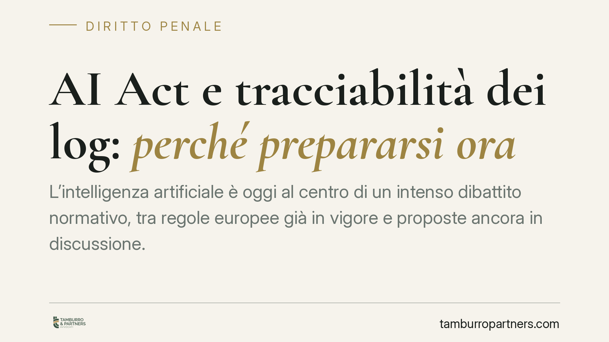

AI Act e tracciabilità dei log: perché prepararsi ora
L'intelligenza artificiale è oggi al centro di un intenso dibattito normativo, tra regole europee già in vigore e proposte ancora in discussione. Per le imprese la questione decisiva riguarda la tracciabilità dei sistemi: conservare i log può diventare determinante sul piano probatorio. Vale la pena distinguere ciò che è vigente da ciò che è soltanto prospettico, per impostare scelte prudenti.

Premessa metodologica
Sul tema dell'intelligenza artificiale circolano riferimenti normativi di diversa natura: alcuni già in vigore, altri in fase di iter o soltanto annunciati. In questo contributo manteniamo una netta separazione tra le due categorie, perché costruire scelte aziendali su norme non ancora esistenti espone a rischi concreti.
Segnaliamo subito un dato di cautela. Riferimenti come un presunto "D.lgs. 160/2026", un nuovo "art. 437-bis c.p." dedicato all'AI o un "art. 25-vicies" del catalogo 231 non risultano, allo stato, confermati come diritto vigente. Li trattiamo quindi come ipotesi prospettiche, da verificare puntualmente prima di qualsiasi decisione operativa, e non come obblighi già efficaci.
Inquadramento normativo
La fonte certa e in vigore è il Regolamento (UE) 2024/1689, noto come AI Act. Il regolamento adotta un approccio basato sul rischio e prevede un'applicazione scaglionata nel tempo: alcune disposizioni sono già operative, altre lo diventeranno per fasi successive.
Tra gli obblighi di maggiore impatto vi sono quelli di trasparenza verso gli utenti, che impongono, in determinati casi, di rendere riconoscibile l'interazione con un sistema di intelligenza artificiale e di segnalare i contenuti generati o manipolati artificialmente. Il numero preciso dell'articolo e il perimetro applicativo vanno verificati nel testo consolidato, perché la materia è in evoluzione e oggetto di interventi di modifica a livello europeo.
Sul versante italiano, eventuali interventi penali o di adeguamento del D.lgs. 231/2001 in tema di AI vanno considerati, oggi, come possibili sviluppi. Finché non vi è una norma pubblicata ed efficace, è errato presentarli come reati vigenti o come nuove ipotesi di responsabilità degli enti.
Implicazioni pratiche: i tre piani di attenzione
Anche restando al diritto certo e alle ipotesi di evoluzione, conviene ragionare su tre piani.
Piano penale. Un futuro ampliamento delle fattispecie legate all'uso di sistemi di AI non è escluso. Per questo è prudente mappare fin da ora i processi in cui l'AI incide su decisioni rilevanti.
Piano 231. Se il legislatore dovesse inserire nuovi reati-presupposto collegati all'AI, il Modello di organizzazione e gestione andrebbe aggiornato. Chi dispone già di un Modello solido avrà un vantaggio di adeguamento.
Piano civile e processuale. Qui si colloca l'aspetto più concreto: la tracciabilità. In un eventuale contenzioso sul danno da AI, la capacità di ricostruire il funzionamento del sistema attraverso i log può risultare decisiva. Chi non conserva evidenze del comportamento del software rischia di trovarsi in una posizione probatoria debole, a prescindere dal merito.
Il nodo dei fornitori extra-UE e dei contratti
Molte imprese utilizzano sistemi forniti da operatori esteri. In questi casi la disponibilità effettiva dei log dipende dal fornitore e dalle clausole pattuite. Se il contratto non prevede obblighi chiari di conservazione e di messa a disposizione dei dati tecnici, l'utilizzatore può ritrovarsi responsabile senza avere accesso agli elementi necessari a difendersi.
Diventano quindi centrali le clausole su conservazione dei log, ripartizione delle responsabilità, obblighi di cooperazione in caso di contenzioso e garanzie di manleva. Anche il profilo assicurativo merita attenzione: è opportuno verificare se le polizze esistenti coprano i danni riconducibili all'uso di sistemi di intelligenza artificiale.
Cosa fare in concreto
- Mappate i sistemi di AI in uso o in progetto, indicando per ciascuno la funzione, il livello di rischio e i processi decisionali interessati.
- Impostate una politica di conservazione dei log, definendo cosa registrare, per quanto tempo e con quali garanzie di integrità, così da disporre di evidenze utilizzabili in giudizio.
- Rivedete i contratti con i fornitori, in particolare extra-UE, inserendo clausole su conservazione e accesso ai log, ripartizione delle responsabilità e manleva.
- Aggiornate il Modello 231 e le procedure interne, predisponendo l'impianto a eventuali nuovi reati-presupposto in materia di AI.
- Verificate le coperture assicurative e confrontatevi con il broker sui rischi specifici legati all'intelligenza artificiale.
Conclusione
Il quadro europeo è già vincolante in alcuni suoi profili, mentre il versante penale e 231 italiano resta, allo stato, in gran parte prospettico. Questa distinzione non autorizza l'inerzia: gli interventi su tracciabilità, contratti e assetti organizzativi sono utili fin da subito e riducono l'esposizione futura. Consigliamo di procedere per gradi, verificando lo stato effettivo di ogni norma prima di adeguare procedure e documenti.
Contributo informativo a cura di Tamburro & Partners - Avv. Giuseppe Tamburro. Non costituisce parere legale.
Ogni condominio ha una storia a sé.
Se gestisci un'amministrazione e vuoi un confronto su una specifica questione condominiale, scrivi allo studio. Ti rispondiamo entro un giorno lavorativo.